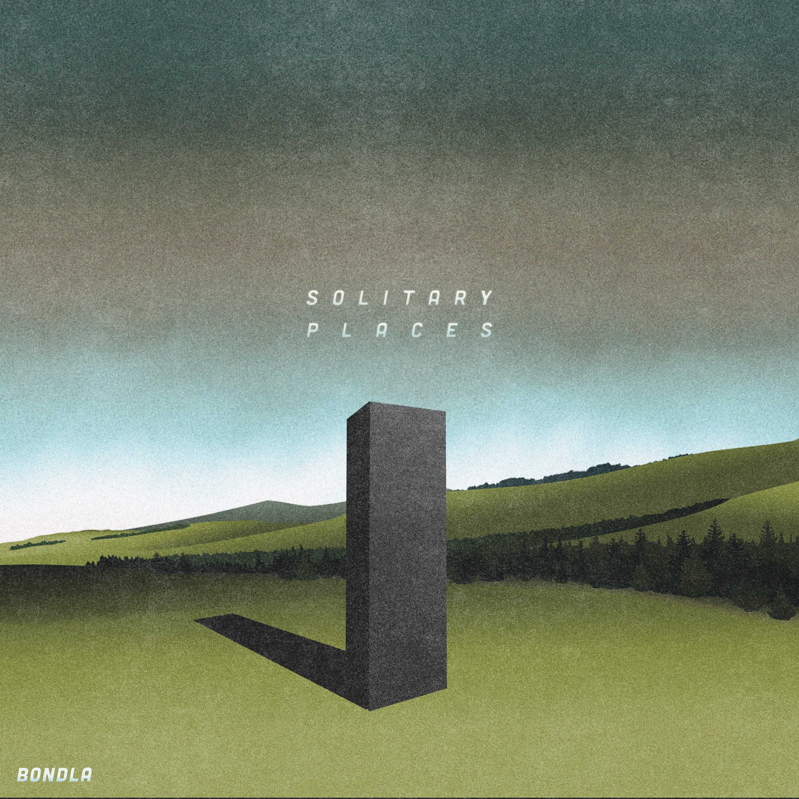
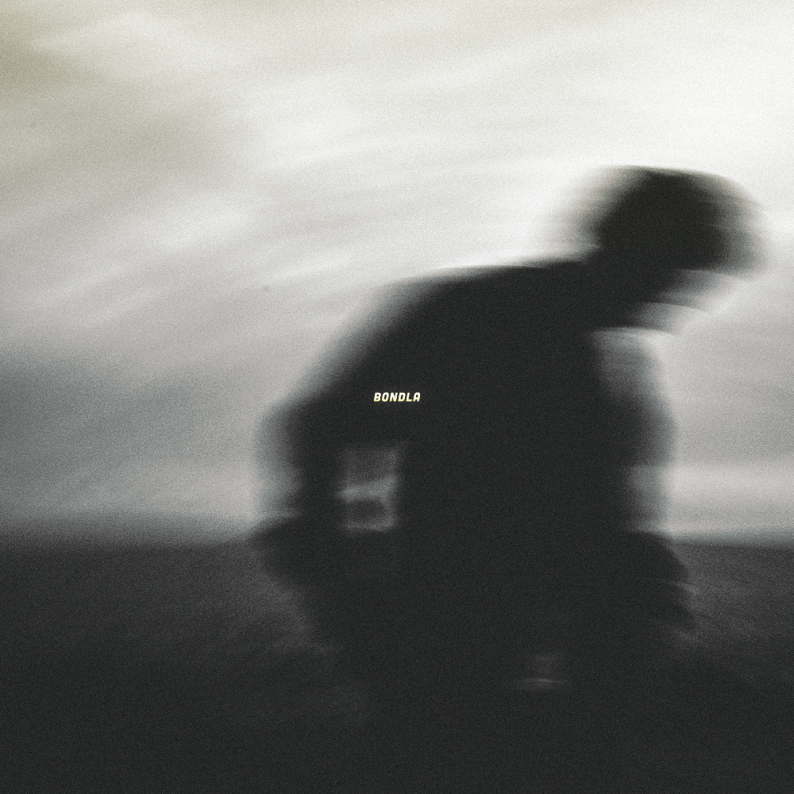
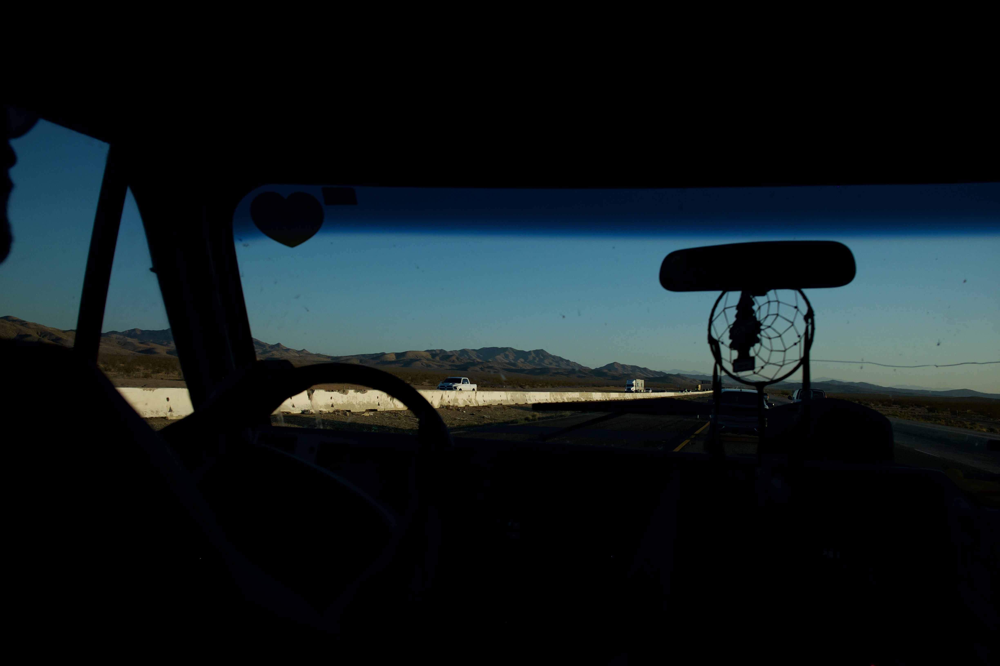
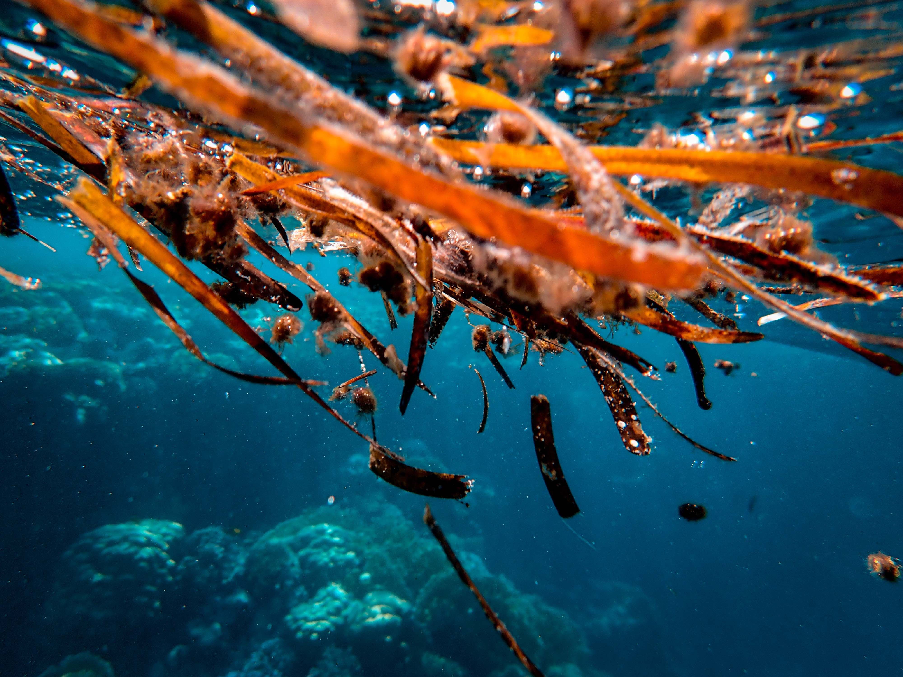
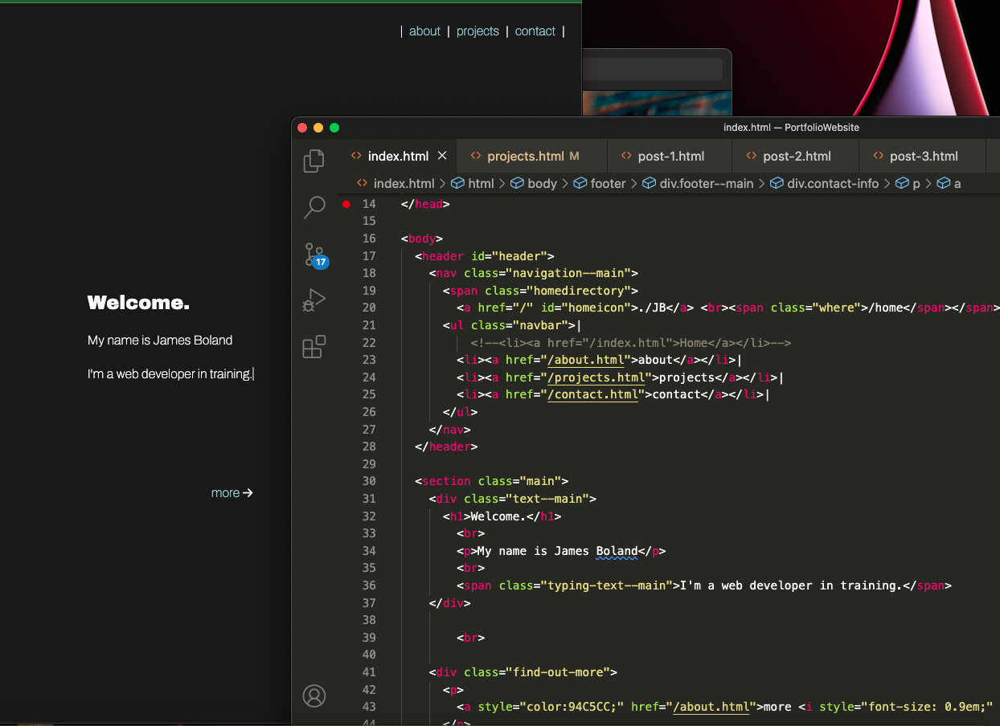

Projects
These are to include more code-related projects that I have worked on in the future to represent me as a coder, and documentation or resources to help explain them further. The below blogs are placeholders for this website however the titles and images relate to real projects or experiences of my own. All of the images except for image #4 are my own.
-

blog post 1
bondla - Solitary Places
Published 11/11/22
Looking back at the EP initially released 05/11/2020 -

blog post 2
DFILWM
Published 12/11/22
My second release. -

blog post 3
Cruising through LA
Published 13/11/22
My experience roadtripping with some friends through the North East Coast of the US. -

blog post 4
The time I stepped on sea urchin
Published 14/11/22
I stepped on a Sea Urchin whilst working with The Yacht Week in Croatia. -

blog post 5
Building my portfolio website
Published 15/11/22
My first assignment with Coder Academy.